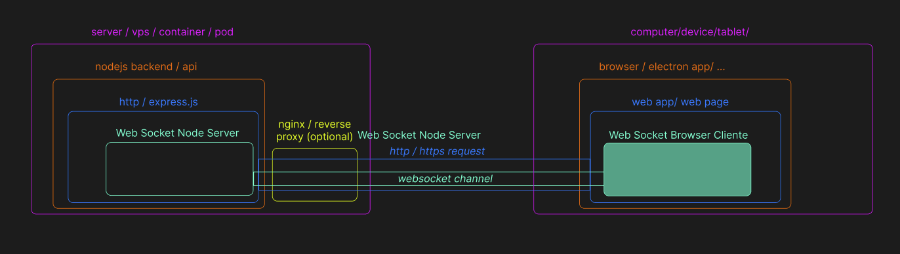

GITHUB
GITHUB
Websocket Browser Client
Browser Client
A web socket browser client for web socket process connector servers. Use this client to connect to a web socket server and send and receive messages.
ToDo...
Install
npm install --save ws-browser-client
ToDo...
Server and other Clients
Use this tool with out web socket server and web socket server side client
WebSocket Node Server
WebSocket Server Side Client
ToDo...
Diagram
Examples
ToDo...
API
ToDo...